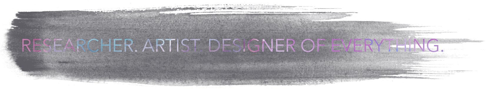

I'm currently working on this site! Pardon the dust while stuff is still under construction.
Hello, I'm Lynn, and Design is my passion.
Armed with a sketchbook and pen, I approach problems through a design-thinking point of view. Design is everywhere, but good design takes thorough observation, analysis, and understanding of a particular task and user.
I've worked on a wide variety of design problems, from web tools to mobile applications, from wayfinding to classic product design. See my projects here. I believe in closely studying and interacting with situations and user groups to inform effective and usable designs. My concentration is in designing iOS applications and mobile-first web apps.
Design revolutionizes the way people live, even on a small scale. We can learn so much about designing devices through observation, empathy, and creativity. Something cool about creativity (and there's been a whole lot of interesting research on this!) is that multiple ideas are more efficient than just one. That's what I love about design: there's no limit to inspiration. I'm eager to tackle any problem and produce novel, exciting design solutions.
i'd love to chat: lihao@ucsd.edu | 510.542.4393